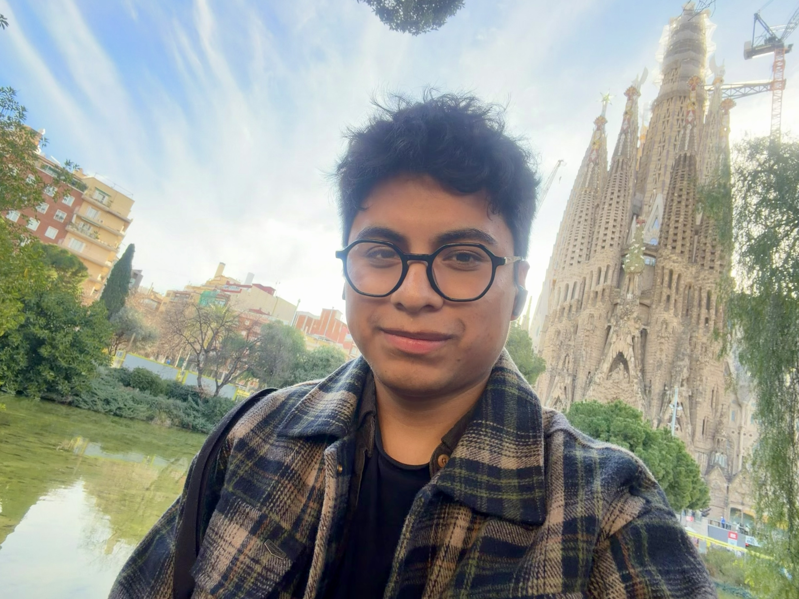

Hi, I'm Brayan from Juliaca, Peru.
I am a Research Fellow at GRADE and the Wyss Academy for Nature, where I work with the Political Economy and Sustainable Development team. My research lies at the intersection of development economics and political economy, with a focus on text-as-data methods and large language models.
Prior to joining GRADE and the Wyss Academy, I worked at Innovations for Poverty Action and collaborated on projects with institutions including Harvard Graduate School of Education, New York University, and the Inter-American Development Bank.
I hold a Bachelor's degree in Economics from Universidad de Piura and a Master's degree in Economics from Universidad Nacional de La Plata.